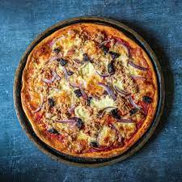

Recipe For Tuna Pizza

Description
Only a few common paultry ingredients are needed in making this homemade tuna pizza.
You can make pizza dough as well as pizza sauce from scratch following the recipes.
Ingredients
- 1 pound of pizza dough (external link)
- 3 tablespoons of pizza sauce (external link)
- 1 cup of shredded cheese
- 5 ounces (150 grams) canned tuna, drained of oil
- 1/2 cup of sweetcorn
- basil leaves
Steps
- Roll out the pizza dough. If you like thin crust, roll as thin as possible.
- When ready, transfer the rolled-out dough onto a baking sheet lined with baking parchment paper.
- Top it with half of the sauce, shredded cheese, tuna and sweetcorn.
- Bake in the oven at 400° Fahrenheit (200° Celsius) for 10 minutes or until the bottom is nice and brown.
- Enjoy!